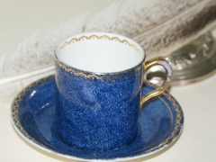
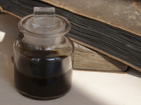

About
15+ Years of À Vos Plumes!

If you want to skip straight to the “meat” of the site, click on Practice Exercises. Specifics on what’s to be found in each part of the site can be found by clicking Site Map (left). If you want a brief description of the site’s goals and philosophy, read on!
Writing in a foreign language conveys a sense of freedom, buoyancy, an experimental spirit. This site is for instructors of French who feel this way and for their students. It is designed to pool our collective wisdom about effective writing and teaching. The materials reflect the best ideas I have gleaned over the past fifteen years from friends and colleagues. As you contribute, I hope the site will improve although not necessarily grow. I will replace and rewrite, but try to keep from accumulating a mass of semi-redundant documents that are hard to navigate. Most of us have little time to read about pedagogy, but want good ideas that are easy to find and implement. I hope you will find some of those here. I hope you will send your students here to practice their grammar and to decipher the mysteries of how we teach and what we expect.
Out with the old, in with the new!
If you have visited this site in the past 15 years, you may have noticed that it looks a lot different! I want to preserve the memory of the past version of À Vos Plumes! while also celebrating its new, fresh design. Check out the History of À Vos Plumes! to see all the changes that have been made in an effort to continue providing accessible and open-source French learning resources. I am committed to updating the site with any high-quality materials or ideas that you are willing to share.
Founder
I, Alison Levine, am an associate professor of French at the University of Virginia. My fields are civilization and film. I am not a specialist in teaching writing and have no training in this area. I do teach writing in French in all my courses, at the intermediate/advanced levels, and I regularly teach an intermediate/advanced composition course. I think that one of the most important things we can do for our students is to help them to become better writers.
My thinking about writing has been profoundly shaped by other writing teachers, especially by teachers of English and French composition. I have tried to credit my immediate sources, but those sources may have recycled and adapted others’ ideas. If someone reading this finds uncredited ideas s/he thinks s/he owns, I apologize. Alexandra Duckworth, Greg Colomb, Marva Barnett and Cheryl Krueger deserve particular thanks for their contributions to the site. Barbara Kuczun Nelson inspired me to create the Javascript grammar exercises and helped me get started with coding.
For more information about me, please visit my UVA Open Scholar page.
About funding
This site is one of the last four projects funded by the University of Virginia’s Teaching + Technology Initiative. The videos were funded by UVA’s Hybrid Challenge Initiative.
Contribute

We’d love to include your teaching ideas as well. Please feel free to contact me, Alison Levine at the UVA French Department to contribute exercises, activity ideas, writing assignments, handouts for students, or anything else you think would be of use to others teaching French writing or grammar.
Please proof and edit your contributions carefully for quality. We reserve the right to make our own edits and modifications to your materials as well. We will publish all excellent contributions that do not duplicate other material available on the site.
You can contact me via avosplumesorg@gmail.com.
About licensing
We abide by Creative Commons licensing principles:
* nothing on the site may be used for commercial purposes;
* anyone is free to download and modify work published on the site as long as you give credit and share alike.

A Vos Plumes! website by Alison J. Murray Levine is licensed under a Creative Commons Attribution-Noncommercial-Share Alike 3.0 United States License.